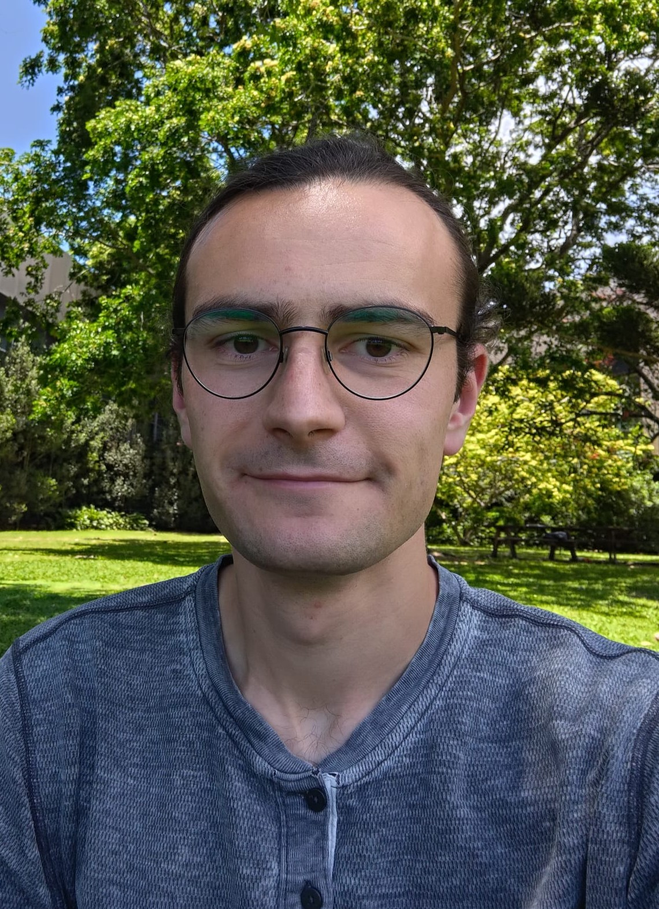
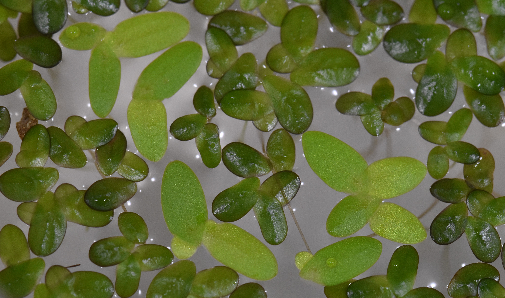

I did my Bachelor in biology at Bielefeld University (Germany), and a joint Master in evolutionary biology at Uppsala University (Sweden) and the University of Groningen (Netherlands). I am currently doing a PhD at the University of Queensland (Australia) on eco-evo interactions in duckweeds in the Hart Lab.I find that scientists benefit from different ways of approaching and doing things, and to pick up different approaches I have worked on ants, plants, songbirds, parrots, monkeys & humans driven by questions centering around behavioural ecology, ancient DNA community reconstruction, human personality measurement and collective behaviour.
I draw inspiration from Kuhn's and Feyerabend's philosophy of science, which I interpret as a case for pluralism of ideas and approaches in science. In the absence of a given reality for us to study, there is so much room for us to play with different conceptualizations of the world that sticking to any one would be boring 😄

Duckweed genetic population structureIn my first PhD chapter, I am using a genotype-by-sequencing approach to investigate meta-population structure and multispecies competitive environemnts of two local duckweed species Lemna aequinoctialis (light green) & Landoltia punctata (dark green).
For the second and third chapters, I am conducting eco-evo duckweed experiments on duckweeds. When genetic variation is fixed, individuals can change their traits via plasticity, and populations can change their traits via selection among individuals (so far so evolution). At the same time, density shapes individual and population traits (so far to ecology). I am using a density dependant trait to investigate how density mediates plasticity and selection to change traits of individuals and populations.
Spinning of from the empirical work, I am working on a conceptual project on different definitions of phenotypic plasticity. The classic definition: "The ability of a given genotype to express different phenotypes in different environments" is an umbrella definition housing several different definitions depending on how one defines genotype, phenotype, and environment. My aim is to develop the different definitions of phenotypic plasticity into a resource for phenotypic plasticity research on a variety of biological systems and questions.
Temizyürek, T., Richardson, G, B., Brown, G. Comparability of personality facets between men and women: A test of measurement invariance in IPIP-NEO facets in 49 countries. 2024. Journal of Research in Psychology, 113. PDF
Temizyürek, T., Johannknecht, M., Korsten, P. Incubation before Clutch Completion Predicts Incubation Time and Hatching Asynchrony in the Blue Tit (Cyanistes caeruleus). 2022. Ardea, 110(2), 213-231. PDF
Patlar, B., Weber, M., Temizyürek, T., & Ramm, S. A. Seminal Fluid-Mediated Manipulation of Post-mating Behavior in a Simultaneous Hermaphrodite. 2020. Current Biology, 30(1), 143-149.e4. PDF
Rare genuine synthesis of literature and science
A fully Kuhnian (philosophy of) history (includes a chapter on different mathematics)
Great science history, blueprint for Mayr's Growth of Biological Thought
Amazing reconstruction of ancient culture and thinking
Makes you almost believe that the universities of the good old times really existed
A short read on concise style
Amazing combination of being right but getting every detail wrong
Constructivist account of biology
Traces diversity, evolution and inheritance through Western thought
Collection of apparently questionable but nontheless meaningful biographies
The closest a scientist can come to philosophy before becoming a philosopher
Including information of Feynman's approach to science
A warning that supernatural phenomena are best not be pursued rationally
Lays out Curie's exemplary science ethics
Shows that objective science is impossible and undesireable
"Might go hay-wire but will never be humdrum"
Stark example of the tyrannical science Feyerabend warned about
Critizies definitions of evolution as just phenotypic variation, differential & heritable fitness
Polemic against administrative overload at universities
Very good popular science writing
On the discovery of the elements, including all the dead-ends
Amazing long-term evolution experiment on fox domestication in the Soviet Union
Active philosophy academia forum
Advice for PhD students
Examples of successful academic grant, fellowhip and job applications
Amazing visualisation of who agrees/disagrees with whom in philosophy
Repository of important eco-evo papers with interview of the authors
Hannah Arendt spoke on the German radio (Bayerischer Rundfunk) on the occasion of Martin Heideggers 80th birthday about Heidegger's philosophy teaching, and by analogy, about how one should do philosophy. The broadcast is packed with ideas and displays Hannah Arendt's uncompromising moral philosophical compass. A version of the German text is available (paywalled) at the Merkur Zeitschrift, and an English translation (also paywalled) at The New York Review of Books. A partial recording of the broadcast can be found on YouTube. You can download my translation of the broadcast here.
There is no better way to make you feel uneducated (about history) than by reading Egon Friedell. He sets the standard for historical scholarship in both comprehensivness of knowledge, and more importantly, in his ability to interpret history, thereby removing any distance that the elapsed time has created. Somewhat infuriatingly, he also commanded the most beautiful German, using the language not just for transport, but for the direct expression of ideas; he wrote poetry in prose. I have translated (the meaning, not the poetry) of two short chapters that stayed with me from his Kulturgeschichte des Altertums (Cultural History of Antiquity), you can download them here.